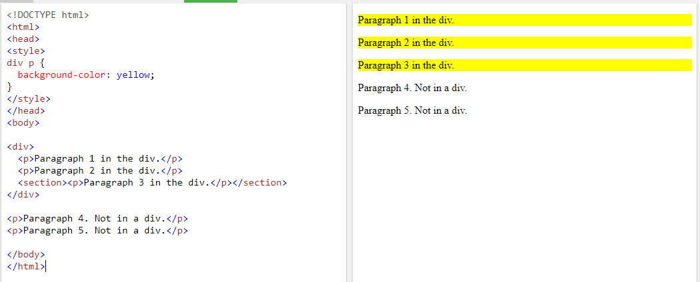
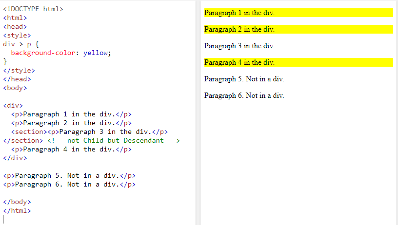
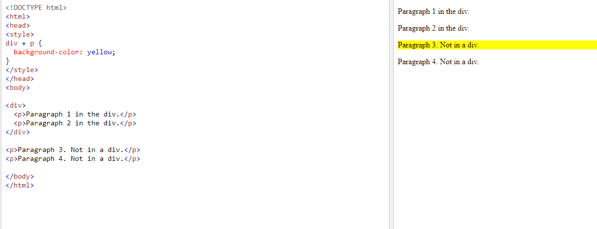
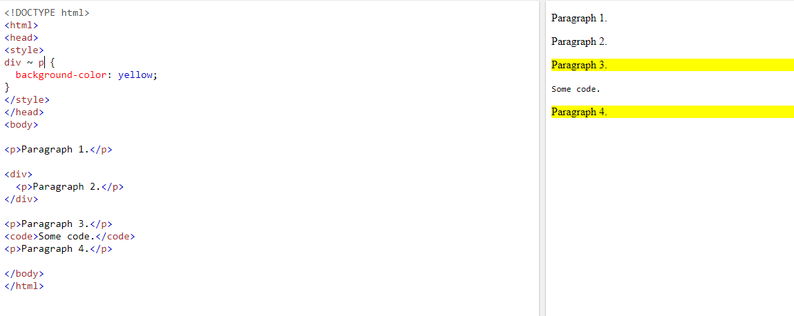

- ประกอบด้วย 3 ส่วน ดังตาราง
| Selector | {Property: | Value} |
|---|---|---|
| ส่วน HTML tag ที่เราต้องการจะให้แสดงผล เช่น table ก็จะแสดงผลในส่วนของตาราง | ส่วนของคุณสมบัติที่เราต้องการให้แสดง เช่น สีตัวอักษร , ชนิดตัวอักษร , ขนาดตัวอักษร | ค่าที่เราต้องการให้แสดง |
- การสร้าง style เพื่อใช้กับไฟล์ html มีทั้งหมด 3 แบบดังนี้
| Inline | Internal | External |
|---|---|---|
| เขียนภายในบรรทัดเดียวกันกับโค้ด | เขียนอยู่ในไฟล์เดียวกัน ใน tag style | เขียนไฟล์ css แยก และทำการเรียกในไฟล์ html เพื่อใช้งาน |
- 2 แบบ ดังนี้
| Class selector | ID selector |
|---|---|
| สร้างโดยกำหนดให้เป็น class | เป็นการกำหนด selector อีกแบบหนึ่ง ซึ่งเราจะใช้สัญลักษณ์ # |
- 4 แบบ ดังนี้
| Syntax | การใช้งาน | ตัวอย่าง |
|---|---|---|
| ช่องว่าง | Descendant Selector ไม่ได้มีการกำหนดแน่ชัดว่าถัดไปคืออะไร เช่น div p ไม่ว่า p จะมีอะไรซ้อนก็ตาม แต่ถ้าอยู่ใน tag div จะถือว่าต้องเปลี่ยนตามคุณสมบัติที่กำหนด | 
ภาพจาก w3school |
| > | Child Selector ตัวลูก เช่น div>p กำหนดว่าทุก tag p ที่เป็นลูกของ div โดยตรง จะต้องเปลี่ยนคุณสมบัติตามที่ตั้งค่าไว้ | 
ภาพจาก w3school |
| + | Adjacent Sibling Selector ตัวพี่น้องที่อยู่ติดกัน เช่น div+p กำหนดว่า tag p ที่เเขียนต่อจาก div แค่ตัวถัดไปเท่านั้น จะต้องเปลี่ยนคุณสมบัติตามที่ตั้งค่าไว้ | 
ภาพจาก w3school |
| ~ | General Sibling Selector ตัวเลือกพี่น้องทั่วไป เช่น div~p กำหนดว่า tag p ที่เเขียนต่อจาก div ทุกตัวจะต้องเปลี่ยนคุณสมบัติตามที่ตั้งค่าไว้ | 
ภาพจาก w3school |